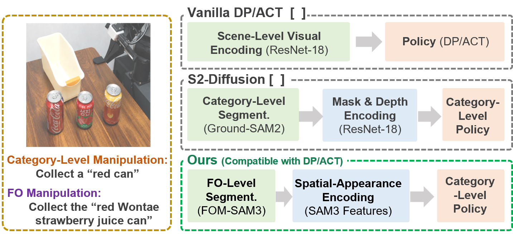
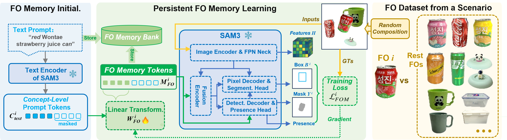
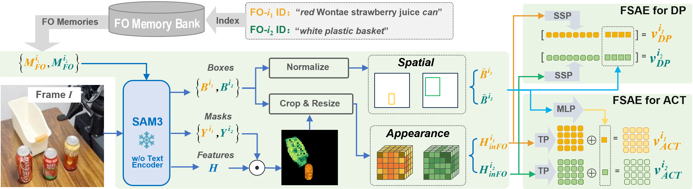
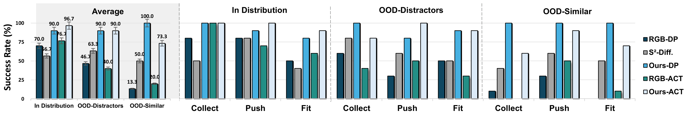
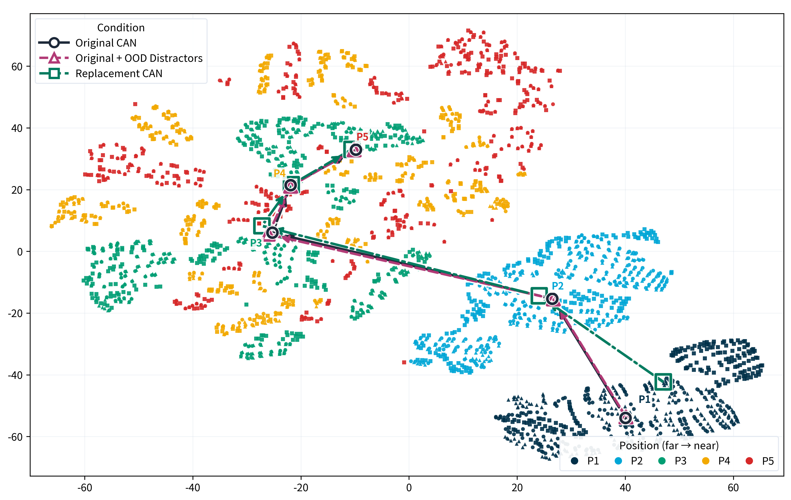

FOM-SAM3-Policy: Towards Fine-Grained Object Manipulation: SAM3-Guided Visuomotor Policy with Persistent Memory Learning and Focused Visual Conditioning
Anonymous Institution
Video Presentation
Abstract

Method


Experiments
REAL-ROBOT MANIPULATION

Generalization
Frozen policies retain the learned skill across identity, instance, and scene changes. Replacing only FO Memory Tokens yields 28/30 successful Ours-DP rollouts and 23/30 Ours-ACT rollouts on newly registered Similar-FOs. Ours-DP also succeeds on every tested Similar-FO and novel-instance trial, completes all five larger instance-variation trials, and reaches 10/10 under a background shift and 9/10 in clutter. These results cover geometry-compatible reuse with frozen FOM-SAM3, FSAE, and action policies.
Viewpoint-Aware Target Features

Experiment. Five approach waypoints are repeated with the original can, OOD distractors, and a same-category replacement can, yielding 15 pose-aligned frames. After target ROIs are visually verified, 3,113 mask-valid spatial features are jointly standardized, reduced with PCA, and embedded with t-SNE.
Reading the plot. Color denotes viewpoint from P1 (far) to P5 (near); marker shape denotes the condition. Each small point represents one target-local spatial feature.
Viewpoint progression. Original and Original+OOD centroid trajectories nearly overlap; the replacement can follows a similar progression, especially from P2 to P5. This suggests reduced distractor influence after correct target selection, while retaining viewpoint sensitivity. The visualization is qualitative: t-SNE distances have no physical units and do not establish invariance or statistical significance.
BibTeX